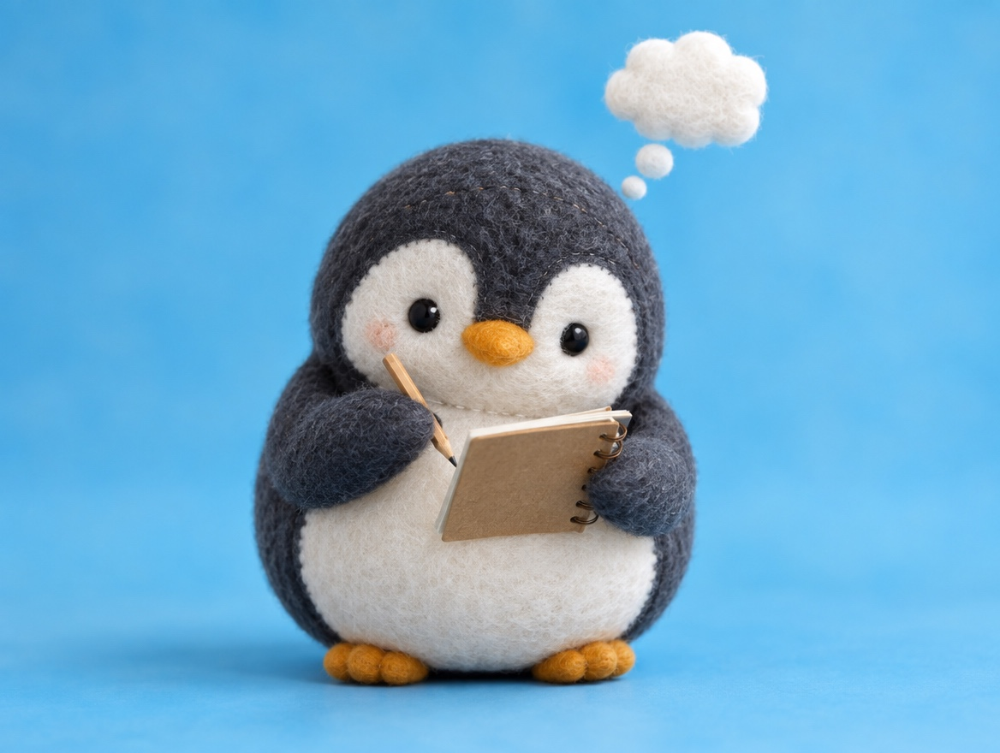

🧪 LAB · 試作 — AIが読書メモから一気に作った記事です。本番の一覧には出していません · 試作の一覧
🐧 EVERYDAY LIFE⚡ 44 SEC
If you write down small thoughts, you will not run out of things to say 📓

Sound Familiar
Has a friend ever asked you "How are you these days?", and nothing came to mind?
Maybe you have things to say, but you just forgot them.
The Point
I recommend writing your small thoughts in a little notebook.
The Reason
This is because when you write something down, it stays in a corner of your head.
Then it comes back to you easily during a conversation.
⚡ TRY IT
💭 Catch your thoughts!
💭Little thoughts float by. Tap them before they fly away!
So… anything new lately?
My topic notebook0 / 6
Empty… for now.
- The new ramen shop looks good
- What is that building behind the station?
- That cloud looks like a penguin
- This coffee smells like chocolate
- The same cat sits there every day
- Chestnut sweets are everywhere now
Tap, tap! Write them down!
📓 Your notebook is ready. Now a friend comes!
💡 Topics popped up from your notebook! Words come out easily.
😶 "Um… nothing much…" Your head is empty.
For Example
For example, "The new ramen shop by the station looks good" or "What is that building behind the station?" is enough.
Even if it is not a big event, a small "Huh?" can be a good topic.
Try This
Today, if something catches your eye, try writing just 1 line in the notes app on your phone.
In Short
People who are good at talking may be people who have many small topics.
📚 I wrote this from my reading notes.